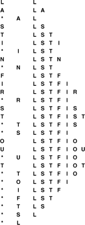

C++ Programming Robert Sedgewick - Princeton University Addison Wesley Professional Algorithms in C++, Parts 1–4: Fundamentals, Data Structure, Sorting, Searching, Third Edition C++ Programming Robert Sedgewick - Princeton University Addison Wesley Professional Algorithms in C++, Parts 1–4: Fundamentals, Data Structure, Sorting, Searching, Third Edition
4.2. Pushdown Stack ADT
Of the data types that support insert and remove for collections of objects, the most important is called the pushdown stack.
A stack operates somewhat like a busy professor's "in" box: work piles up in a stack, and whenever the professor has a chance to get some work done, it comes off the top. A student's paper might well get stuck at the bottom of the stack for a day or two, but a conscientious professor might manage to get the stack emptied at the end of the week. As we shall see, computer programs are naturally organized in this way. They frequently postpone some tasks while doing others; moreover, they frequently need to return to the most recently postponed task first. Thus, pushdown stacks appear as the fundamental data structure for many algorithms.
Definition 4.2. A pushdown stack is an ADT that comprises two basic operations: insert (push) a new item, and remove (pop)the item that was most recently inserted|
That is, when we speak of a pushdown stack ADT, we are referring to a description of the push and pop operations that is sufficiently well specified that a client program can make use of them, and to some implementation of the operations enforcing the rule that characterizes a pushdown stack: items are removed according to a last-in, first-out (LIFO) discipline.
Program 4.4. Pushdown-stack ADT interface|
Using the same convention that we used in Program 4.3, we define a pushdown stack ADT with public function declarations, assuming that the stack representation and any other implementation-dependent code is kept private in implementations, so that we can change implementations without changing client code. Additionally, this interface uses a template to allow clients to use stacks containing objects from any class (see Programs 4.5 and 4.6), and implementations to use the keyword Item as the type of the objects on the stack (see Programs 4.7 and 4.8). The argument to the STACK constructor specifies the maximum number of elements expected on the stack.
template <class Item>
class STACK
{
private:
// Implementation-dependent code
public:
STACK(int);
int empty() const;
void push(Item item);
Item pop();
};
|
Figure 4.1 shows how a sample stack evolves through a series of push and pop operations. Each push increases the size of the stack by 1 and each pop decreases the size of the stack by 1. In the figure, the items in the stack are listed in the order that they are put on the stack, so that it is clear that the rightmost item in the list is the one at the top of the stack—the item that is to be returned if the next operation is pop. In an implementation, we are free to organize the items any way that we want, as long as we allow clients to maintain the illusion that the items are organized in this way.
This list shows the result of the sequence of operations in the left column (top to bottom), where a letter denotes push and an asterisk denotes pop. Each line displays the operation, the letter popped for pop operations, and the contents of the stack after the operation, in order from least recently inserted to most recently inserted, left to right.

|
As we discussed in the previous section, in order to write programs that use the pushdown stack abstraction, we need first to define the interface. To this end, our convention is to declare a collection of public member functions to be used in class implementations, as illustrated in Program 4.4. We keep all other class members private, so that C++ will ensure that these functions are the only connection between client programs and implementations. We have already seen, in Chapters 1 and 3, the value of identifying the abstract operations on which a computation is based. We are now considering a mechanism that allows us to write programs that use these abstract operations. To enforce the abstraction, we use the class mechanism to hide the data structure and the implementation from the client. In Section 4.3, we consider examples of client programs that use the stack abstraction; in Section 4.4, we consider implementations.
The first line of code in the stack ADT interface of Program 4.4 adds a C++ template to the class, which gives client programs the capability to specify the kind of objects that are allowed on the stack. A declaration such as
specifies that the type of items on stack save is to be int (and that the maximum number of items the stack might need to hold at any one time is N). The client could build stacks containing objects of type float or char or any other type (even STACK) simply by changing the template parameter within the angle brackets. In the implementation, we may think of the indicated class as replacing Item wherever it occurs.
In an ADT, the purpose of the interface is to serve as a contract between client and implementation. The function declarations ensure that the calls in the client program and the function definitions in the implementation match, but the interface otherwise contains no information about how the functions are to be implemented, or even how they are to behave. How can we explain what a stack is to a client program? For simple structures like stacks, one possibility is to exhibit the code, but this solution is clearly not effective in general. Most often, programmers resort to English-language descriptions, in documentation that accompanies the code.
A rigorous treatment of this situation requires a full description, in some formal mathematical notation, of how the functions are supposed to behave. Such a description is sometimes called a specification. Developing a specification is generally a challenging task. It has to describe any program that implements the functions in a mathematical metalanguage, whereas we are used to specifying the behavior of functions with code written in a programming language. In practice, we describe behavior in English-language descriptions. Before getting drawn further into epistemological issues, we move on. In this book, we give detailed examples, English-language descriptions, and multiple implementations for most of the ADTs that we consider.
To emphasize that our specification of the pushdown stack ADT is sufficient information for us to write meaningful client programs, we consider, in Section 4.3, two client programs that use pushdown stacks, before considering any implementation.
|